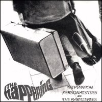

Television Personalities / Bartlebees The Happening

Recorded at Toe Rag Studios London Engineered by Liam B. Watson
[Bartlebees] Why don't you smile now?
Recorded ast Elan Studios Munich Engineered by Wolfgang "WO" Sandvoss